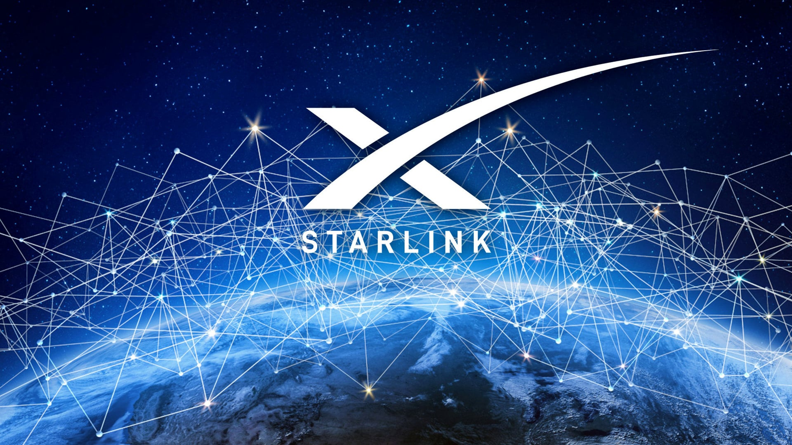

Starlink
Starlink — проєкт американської компанії SpaceX щодо розробки високопродуктивної супутникової платформи для виготовлення супутників зв'язку та запусків великої їх кількості (сузір'я) у космос[1]. Система надає доступ до широкосмугового інтернету у будь-якій точці планети. Першою компанія почала обслуговувати Канаду та США (2020).